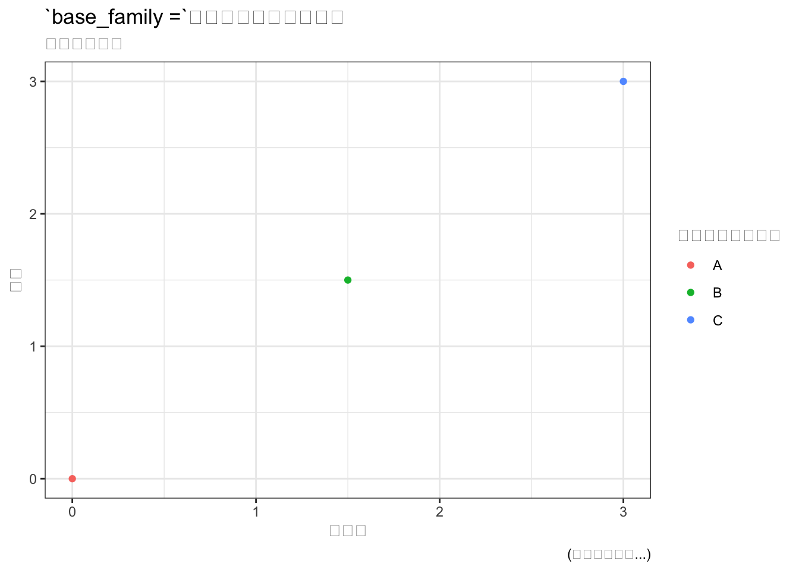
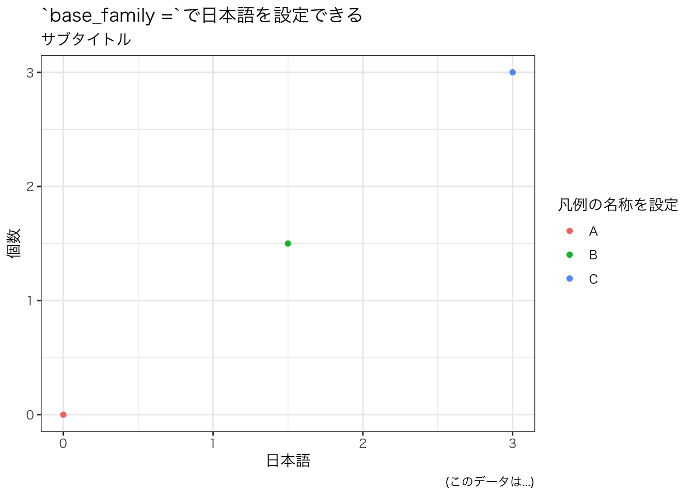
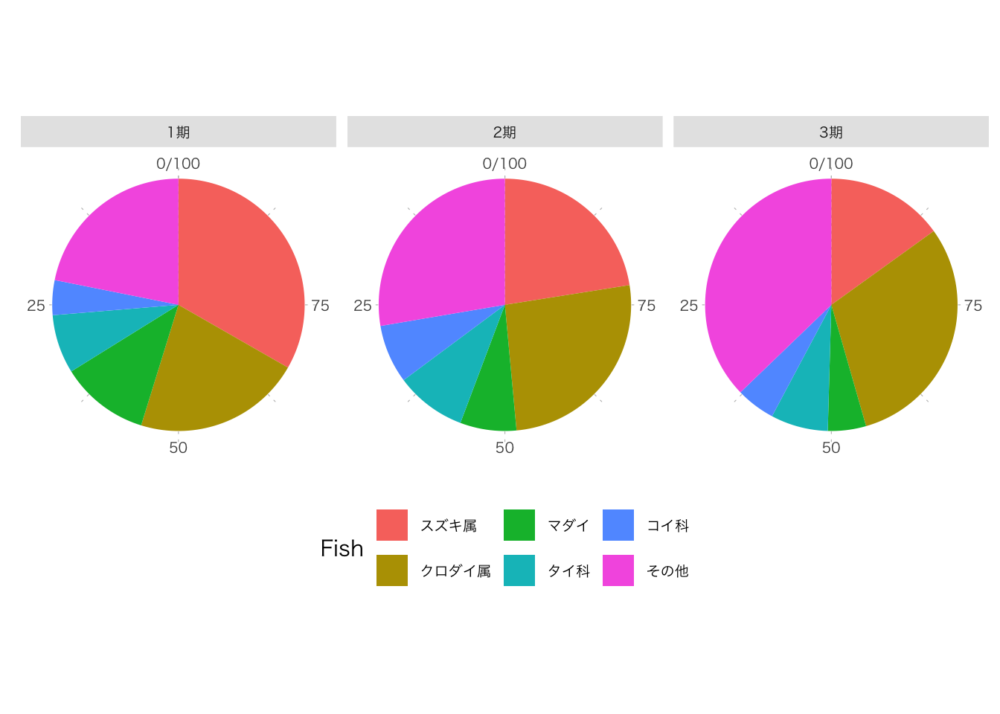
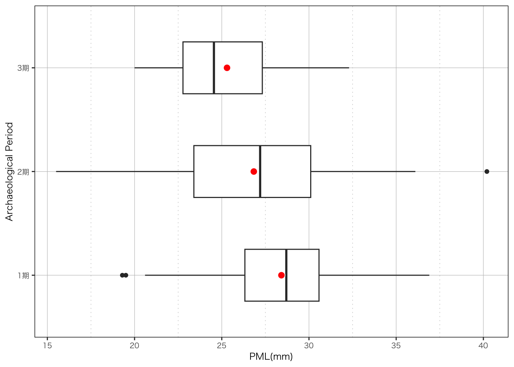

4 ggplot2を使用したデータビジュアライゼーション
4.1 データ可視化の重要性
データの特徴を知るために概要表を作成が重要であることは前章で示しましたが、それだけでは十分ではありません。インターネットでデータの可視化の重要性を検索すると様々なメリットを知ることができます。論文等で明示されることは少ないようですが、鈴木・鈴村(2015)では以下の6点が指摘されています。
- 「データの持つ意味」を発見しやすくなる
- 状態（状況）の特徴が把握しやすくなる
- 数量の比較がしやすくなる
- 相関性が把握しやすくなる
- 変化（推移）が把握しやすくなる
–鈴木・鈴村(2015)pp.474より
ggplot2の開発者らは、有名な統計学者のTukey氏の次の主張を引用しています(Wickham & Grolemund, 2017)。
The simple graph has brought more information to the data analyst’s mind than any other device.
（意訳）シンプルな図は、他のどんな装置よりも多くの情報を私たちにもたらした。
– Tukey(1962)pp.49より
Tukey氏は「探索的データ解析（EDA:Explorary Data Analysis）」を提唱し、「箱ひげ図」などの直感的でわかりやすいグラフを提示したことで知られています。これらのメッセージからも可視化の重要性、メリットが端的に理解できるでしょう。
さて話題が脱線しつつありますが、ここで要約統計量だけでなく、データ可視化が重要であることを理解するために、Alberto Cairoが作成・公開しているdatasauRusパッケージを利用します。このパッケージには13のグループと\(x\)と\(y\)データからなるデータセットが含まれており、それらは同じ平均と標準偏差、ピアソン相関係数を示しています。このうち3つのグループの要約統計量を示したものが表4.1です。このデータをプロットすると、恐竜 （Anscombosaurus2）や星形、X字形が現れ、要約統計量は一致するにも関わらず、データの分布は全く異なることがわかります（図4.1）。Same Stats, Different Graphsにアニメーションも掲載されているので、理解が深まるでしょう。
このように、平均や標準偏差といった基本的な要約統計量だけではデータ全体を把握することはできません。データの分布を可視化することで、より多くの情報を把握することができます。
| dataset | x_mean | y_mean | x_S.D. | y_S.D. |
|---|---|---|---|---|
| dino | 54.3 | 47.8 | 16.8 | 26.9 |
| star | 54.3 | 47.8 | 16.8 | 26.9 |
| x_shape | 54.3 | 47.8 | 16.8 | 26.9 |
図 4.1: 可視化の重要性
可視化にはggplot2パッケージを使います。ggplot2では、レイヤーを重ねて、一つのグラフを作成します。レイヤーは、作成したグラフのデータ、グラフの種類（geom_*()関数）、見た目や位置調整などを組み合わせるもので、それぞれ+で連結させていきます。
4.2 見た目を設定する
4.2.1 日本語フォントを探す
ggplot2で可視化するデータおよび図で日本語が含まれる場合、そのままの設定では表示されないので、あらかじめ使用するフォントを明示する必要があります。
systemfontsパッケージのsystemfonts::system_fonts()関数を使えば、システム中のフォントを調べることができます。この後theme_*()で使用する引数base_familyで各自のPCにある日本語フォントを指定することで表示することができます。
# 基本となる背景を作成
base <- data.frame(x = c(0, 1.5, 3),
y = c(0, 1.5, 3),
type = c("A", "B", "C")) %>%
ggplot() +
geom_point(aes(x, y, color = type, fill = type)) +
labs(x = "x軸の名称を設定",
y = "y軸の名称を設定",
title = "theme( )での設定",
subtitle = "サブタイトル",
colour = "凡例の名称を設定", # `colour`で設定したものの名称変更
fill = "凡例の名称を設定", # `fill`で設定したものの名称変更
caption = "(このデータは...)")
base +
labs(x = "日本語", y = "個数",
title = "`base_family =`で日本語を設定できる") +
theme_bw()
# 日本語に設定
base +
labs(x = "日本語", y = "個数",
title = "`base_family =`で日本語を設定できる") +
theme_bw(base_family = "HiraginoSans-W3") # 日本語を使用する場合
4.2.2 見た目の設定
theme_*()は図の背景を設定することができます（図4.2）。デフォルトではtheme_greyが設定されており、背景がグレーのタイルで表示されます。一般的な論文だとモノクロ印刷であるためtheme_bw()、theme_minimal()、theme_classic()が適しています。このtheme_*()で使用できる引数はbase_size（文字の大きさ）、base_family（フォント）、base_line_size（罫線）、base_rect_size（枠線）の4つに限られています。
theme()を用いると、タイトル・ラベル・フォント・背景・罫線・凡例をさらに細かく設定でき、引数はそれに応じて多岐に渡ります（図4.3）。element_*()とセットで使うことが多く、element_blank()（何も表示せず、スペースも差し込まない）、element_rect()（罫線と背景）、element_line()（線関係）、element_text()（文字関係）の4つがあります。
theme_*()はセット販売とすれば、theme()は単品販売のようなものでしょうか。theme_*()はtheme()で上書きすることも可能ですので、基本的にはtheme_*()を使い、必要に応じて変更するとよいと思います。表示にこだわりがある場合や、theme_*()が論文の投稿規定等に合致しない場合などは、theme()を使って詳細に設定するとよいでしょう（図4.4）。
ggplot2の制作者らが“ggplot2: Elegant Graphics for Data Analysis”で解説を公開しているので参照してください(Wickham, 2016)。
図 4.2: theme_*()の表示例
# 基本のプロットに`theme()`を設定する
base +
labs(x = "x軸の名称を設定",
y = "y軸の名称を設定",
title = "theme( )での設定") +
theme(title = element_text(family = "Osaka",
face = "bold",
colour = "blue",
size = 14), # タイトルの設定
axis.title.x = element_text(family = "HiraMaruProN-W4",
colour = "red",
size = 11), # x軸の名前の設定
axis.title.y = element_text(family = "HiraMaruProN-W4",
colour = "green"), # y軸の名前を消す
panel.grid.major = element_line(linetype = "solid",
colour = "black",
linewidth = 0.2), # 罫線の主線の設定
panel.grid.minor = element_line(linetype = "dotted",
colour = "black",
linewidth = 0.2) # 罫線の副線の設
)
図 4.3: theme()の設定例
# `my_theme`に格納しておけば労力を省略できる。
my_theme <-
theme(text = element_text(family = "HiraginoSans-W3",
size = 9), # 日本語フォントの設定
title = element_text(size = 11), # タイトルの設定
# 軸（axis）関係
axis.title = element_text(colour = "black",
size = 9), # 軸の名称の設定
panel.grid.major = element_line(linetype = "solid",
colour = "grey",
linewidth = 0.2), # 罫線の主線の設定
panel.grid.minor = element_line(linetype = "dotted",
colour = "grey",
linewidth = 0.2), # 罫線の副線の設定
panel.background = element_blank(), # 背景を空白に設定
panel.border = element_rect(linetype = "solid",
linewidth = 0.5,
fill = NA),
# 凡例（legend）関係
legend.direction = "horizontal", # 水平にする
legend.position = "bottom", # 凡例の位置
legend.background = element_blank(),
# キャプション（caption）関係
plot.caption = element_text(size = 8),
# facet関係
strip.background = element_rect(fill = "grey90") # `facet_wrap`等のタイトル
)
base + my_theme
図 4.4: theme()で好みの見た目に設定できる
4.3 ヒストグラム
4.3.1 ヒストグラムとは
ヒストグラムは量的データの分布を把握するために用いられるグラフです。一見棒グラフによく似ていますが、ヒストグラムが量的データのうち連続データを用いるのに対し、棒グラフは離散データを使用するという違いがあります。
ggplot2では、ggplot2::geom_histogramを使用します。\(x\)軸にはPML（前上顎骨長）を、\(y\)軸では相対度数（density）や個数（count）を設定します。少数のデータの場合は個数で表現した方が良い場合がありますが、異なるサイズのデータを比較する場合や分布の形状を比較する場合は相対度数で示した方が良いようです。
図4.5は、ggplot2::geom_histogramのデフォルト設定で出力したもので、ここからレイヤーを重ねていくことで、より美しくわかりやすい可視化をすることができます。ビン数はデフォルトで30ですが、binsでビン数を指定することもできます。ビン数は計算で算出することもできます（スタージェスの公式など）。
考古学では先行研究の蓄積が前提となる場合がほとんどなので、それに準じる形でビン幅をを設定する場面が多いと思われます。ビン幅はbinwidthで設定することができます。ビン幅の設定によっては見た目が変わってしまうことがあり、作成者の恣意的な解釈に沿った作図も可能となるため、ビン幅の設定やヒストグラムを読み取る際には留意しなければいけません。
図 4.5: geom_histogramのデフォルト表示
4.3.2 複数のヒストグラムを表示する
ヒストグラムで次元を追加する場合（グループ分け等）、事前にデータフレームの任意の列の型をcharacter型（文字）からfactor型（因子）に変換します。グラフの描写の中でもlevels =で任意の順番に変更することもできます。
1つのグラフの中で複数の変数（グループなど）を表示する場合は、position =で描写方法を指定します。stackのほか、identityやdodgeがあります（図4.6）。
一方、よく似た分布を示したデータの場合は、それぞれでヒストグラムを作成した方が見やすく、ggplot2::facet_wrap()関数や、変数が多い場合はfacet_grid()関数で表現すると比較しやすくなります。多くの場合はfacet_wrap()関数で十分です（図4.7）。
hist_2 <- fish %>%
dplyr::filter(Fish == "クロダイ属" &
Direction == "左" &
Period %in% c("1期", "2期", "3期") &
PML > 0) %>%
# `mutate_at`と`as.factor`を組み合わせて型を変更
dplyr::mutate_at(c("Period", "Fish", "Bone"), as.factor) %>%
ggplot() +
ggplot2::geom_histogram(aes(x = PML,
y = after_stat(density),
fill = Period),
binwidth = 5, # bin幅の設定
colour = "black", # グラフの枠線の色
position = "stack", # 表示方法
boundary = 0) + # ビンの境界を指定
labs(x = "PML（mm）") +
scale_x_continuous(breaks = seq(0, 50, 10),
limits=c(10, 50)) + # x軸の範囲を設定
my_theme
hist_2
図 4.6: position = "stack"での描写
hist_3 <- fish %>%
dplyr::filter(Fish == "クロダイ属" &
Direction == "左" &
Period %in% c("1期", "2期", "3期") &
PML > 0) %>%
ggplot() +
ggplot2::geom_histogram(aes(x = PML,
y = after_stat(density)),
binwidth = 5, # bin幅の設定
fill = "white", # グラフの塗りの色
colour = "black", # グラフの枠線の色
boundary = 0) + # ビンの境界を指定
labs(x = "PML（mm）") +
scale_x_continuous(breaks = seq(0, 50, 10),
limits=c(0, 50)) + # x軸の範囲を設定
my_theme +
# facet_wrapで遺構毎に分割して表示する。
facet_wrap(~Period,
# scales = "free_y", # y軸をそれぞれ設定する時
nrow = 1,
labeller = as_labeller(c(`1期` = "縄文1期",
`2期` = "縄文2期",
`3期` = "縄文3期" )))
#as_labellerでラベル名を変更。``で明示することでエラーを回避。
hist_3
図 4.7: facet_weap()の描写
4.3.3 グラフの情報を取得する
また、表4.2のようにggplot2::ggplot_build()でggplot2で描写したグラフの情報を取得することも可能です。
hist_info <- hist_3 %>% ggplot_build()
hist_info_df <- data.frame(hist_info$data)
hist_info_df %>%
dplyr::select(PANEL, count, xmin, xmax, x, y, density) %>%
head(n = 9) %>%
knitr::kable(caption = "作成したヒストグラムの情報")| PANEL | count | xmin | xmax | x | y | density |
|---|---|---|---|---|---|---|
| 1 | 0 | 0 | 5 | 2.5 | 0.0000000 | 0.0000000 |
| 1 | 0 | 5 | 10 | 7.5 | 0.0000000 | 0.0000000 |
| 1 | 0 | 10 | 15 | 12.5 | 0.0000000 | 0.0000000 |
| 1 | 2 | 15 | 20 | 17.5 | 0.0046512 | 0.0046512 |
| 1 | 11 | 20 | 25 | 22.5 | 0.0255814 | 0.0255814 |
| 1 | 44 | 25 | 30 | 27.5 | 0.1023256 | 0.1023256 |
| 1 | 26 | 30 | 35 | 32.5 | 0.0604651 | 0.0604651 |
| 1 | 3 | 35 | 40 | 37.5 | 0.0069767 | 0.0069767 |
| 1 | 0 | 40 | 45 | 42.5 | 0.0000000 | 0.0000000 |
4.4 棒グラフ
先述した通りヒストグラムは量的データのうち連続データを示すものですが、棒グラフは量的データのうち離散データを示す際に用いるグラフです。棒グラフは棒の高さでデータの大小を示し、値の高低を判別する際に有効です。
4.4.1 棒グラフ
ggplot2ではggplot2::geom_bar()で描写することができます。棒グラフで変数を追加する場合（グループを加える等）はfill =で変数を指定できます。これの機能を利用して帯グラフ（積み上げ棒グラフ）作成することもできます。
bar <- fish %>%
dplyr::filter(Period %in% c("1期", "2期", "3期")) %>%
ggplot() +
ggplot2::geom_bar(aes(x = Period)) +
my_theme # 日本語を使用する場合
bar図 4.8: geom_barのデフォルト表示
4.4.2 帯グラフ
帯グラフを描写したい時もggplot2::geom_bar()を使い、\(y\)軸いっぱいに引き伸ばすposition = "fill"とパーセンテージで表示するscale_y_continuous(labels = scales::percent)を指定します。多くの場合は横方向が好ましいのでcoord_flip()も加えます。
band <- fish %>%
dplyr::filter(Period %in% c("1期", "2期", "3期")) %>%
ggplot2::ggplot() +
geom_bar(aes(x = Period, fill = Fish),
position = "fill") + # 帯グラフにする
scale_y_continuous(labels = scales::percent) +
my_theme +
theme(axis.title.x = element_blank(), # x軸のタイトルを消す
axis.title.y = element_blank() # y軸のタイトルを消す
) +
coord_flip()
band図 4.9: 帯グラフ
割合の少ない項目は「その他」等にまとめた方が視認性が上がることが知られています。ここでは上位5つより下位の魚種を「その他」にまとめ、主要な捕獲対象となった魚種を調べます。
#### ラベルを作成する ####
# 魚種の出土数トップ9を抽出
top5 <- fish %>%
dplyr::filter(Period %in% c("1期", "2期", "3期")) %>%
dplyr::group_by(Fish) %>% # グループ化
dplyr::summarize(count = n(), # 魚種の個数をカウント
.groups = "drop" # グループ解除しておく癖をつける。
) %>%
dplyr::arrange(desc(count)) %>% # `desc()`関数は降順に、`arrange()`関数で並べ替える。
top_n(5) %>% # `top_n()`関数で上位のデータだけ抽出する
dplyr::mutate(Fish = as.character(Fish)) # top9$Fishがfactor型だと調子が悪い。
##### 帯グラフに割り付ける ####
band_2 <- fish %>%
dplyr::filter(Period %in% c("1期", "2期", "3期")) %>%
droplevels() %>%
dplyr::mutate(Fish = factor(if_else(Fish %in% top5$Fish,
Fish, "その他"),
levels = c(top5$Fish, "その他"))) %>%
ggplot() +
ggplot2::geom_bar(aes(x = Period,
fill = Fish),
color = "black",
position = "fill") + # 帯グラフにする
# `scale_y_reverse()` はグラフのy軸を逆順に表示するための関数（見た目のみ）。
# `breaks=`部分：y軸の目盛りを0から1まで、0.2刻みで設定します。
# `labels=`部分：0から80まで、20刻みで目盛りを設定し、
# それを逆順にしています（`rev()`関数を使用）
scale_y_reverse(breaks = seq(0, 1.0, by = 0.2),
labels = c("100 %", rev(seq(0, 80, by = 20)))) +
my_theme +
theme(axis.title.x = element_blank(), # x軸のタイトルを消す
axis.title.y = element_blank(), # y軸のタイトルを消す
) +
coord_flip()
band_2図 4.10: 構成する種類をまとめた帯グラフ
また、ggpatternパッケージのggpattern::geom_bar_pattern()を使用すれば、論文で使うような水玉や斜線、網掛け線などのパターン表示をすることもできます。@ocean_fさんのQiitaで作例が公開されています。
#### 時期毎の集計表を作成し、割り付けるラベルを作成 ####
fish_summarize <- fish %>%
dplyr::filter(Period %in% c("1期", "2期", "3期")) %>%
droplevels() %>% # 次の処理のために不要なレベルを削除しておく（重要）
#`if_else()`関数で場合分けする。トップ5以外は"その他"としてまとめる。
#`levels`引数に`top5$Fish`を指定して、top5の順序通りにする。
dplyr::mutate(Fish = factor(if_else(Fish %in% top5$Fish,
Fish, "その他"),
levels = c(top5$Fish, "その他"))) %>%
dplyr::group_by(Fish, Period) %>% # グループ化
dplyr::summarize(count = n(), # 時期毎の個数をカウント
.groups = "drop" # グループ解除しておく癖をつける。
) %>%
dplyr::group_by(Period) %>%
dplyr::mutate(pct = count / sum(count), # 時期毎の割合を算出
cum_pct = cumsum(pct), # 時期毎の累積割合を算出
pct_label = format( # 時期毎のラベルを作成
round(pct * 100, 1), # `fotmat()`で小数点第1位まで表示
nsmall = 1)
) %>%
ungroup() %>% # グループ解除しておく癖をつける。
arrange(Period) # `desc()`関数がない場合は昇順になる。
##### 論文風にする ####
# `ggpattern::geom_bar_pattern`で論文風にできる。
library(ggpattern)
band_3 <- fish_summarize %>%
ggplot() +
ggpattern::geom_bar_pattern(aes(x = Period,
y = pct, # `geom_bar_pattern`ではyを指定する必要がある。
fill = Fish,
pattern = Fish,
pattern_spacing = Fish,
pattern_density = Fish),
color = "black", # グラフの線の色を設定
pattern_fill = "black", # パターンの線の色を設定
pattern_color = NA,
stat = "identity",
position = "fill") +
# 帯グラフのパターンを設定する
ggplot2::scale_fill_manual(name = "Fish",
values = c("grey50", "white", "grey75",
"white", "white", "grey95"),
guide = guide_legend(byrow = TRUE)) +
ggpattern::scale_pattern_manual(name = "Fish",
values = c("none", "stripe", "none",
"circle", "crosshatch", "none"),
guide = guide_legend(byrow = TRUE)) +
ggpattern::scale_pattern_density_manual(name = "Fish",
values = c(NA, 0.1, NA, 0.2, 0.1, NA),
guide = guide_legend(byrow = TRUE)) +
ggpattern::scale_pattern_spacing_manual(name = "Fish",
values = c(NA, 0.05, NA, 0.05, 0.05, NA),
guide = guide_legend(byrow = TRUE)) +
# `scale_y_reverse()` はグラフのy軸を逆順に表示するための関数（見た目のみ）。
# `breaks=`部分：y軸の目盛りを0から1まで、0.2刻みで設定します。
# `labels=`部分：0から80まで、20刻みで目盛りを設定し、
# それを逆順にしています（`rev()`関数を使用）
scale_y_reverse(breaks = seq(0, 1.0, by = 0.2),
labels = c("100 %", rev(seq(0, 80, by = 20)))) +
my_theme +
theme(axis.title.x = element_blank(), # x軸のタイトルを消す
axis.title.y = element_blank(), # y軸のタイトルを消す
) +
coord_flip()
# 帯グラフに配置するラベルと座標を設定する。
fish_summarize <- fish_summarize %>%
ungroup() %>% # グループを解除しておく。
mutate(y = round((1 - cum_pct) + pct / 2 , 3)) # `scale_y_reverse()` でy座標の見た目が反転しているので1から引く。
# 作図・出力（library(ggtext)でラベルを設定）
band_3 +
ggtext::geom_richtext(aes(x = fish_summarize$Period,
y = fish_summarize$y,
label = fish_summarize$pct_label),
fill = "white", # ラベルの塗りの設定
label.color = NA, # ラベルの枠線の設定
size = 3, # 文字の大きさ
fontface = "bold", # 文字の太さ
hjust = 0.5, # 上下の位置を設定
vjust = 0.5, # 左右の位置を設定
label.padding = unit(c(0.15, 0.1, 0.1, 0.1), "lines"), # ラベルの余白を設定
label.r = unit(0, "lines")) # ラベルの角の丸みを設定図 4.11: geom_bar_patternでの論文風の帯グラフ
ggplot2の拡張機能であるggtext::geom_richtext()は、例えばテキストを太字、斜体にしたり、フォント、色、サイズを変更するなどの見た目の設定や、テキストを下付き文字や上付き文字として配置したり、簡単な画像を貼り付けたりすることができ、細かな設定もできます。label.paddingはラベルの文字列と枠の間の余白をunit()を使って指定できる機能で、label.rはラベルの角の丸みを設定することができます。引数の使用例は「からっぽのしょこ」さん等の個人ブログを参照した方がわかりやすい。
なお、上記のような帯グラフはエクセルでも比較的簡単に作成できる一方、ggplot2では非常に手間がかかるのが弱点です。あらかじめ1つフォーマットを作っておき、使い回しできるようにしておくと時間の短縮となって良いです。
4.5 円グラフ
円グラフは、データ全体を円形で、データ構成する各項目を円形を分割する扇形で表現したグラフで、通常は割合（パーセンテージ）で表示されます。円グラフはエクセルで簡単に作成できることから、割合を表現する方法として広く用いられていますが、学術研究では好ましくないことが指摘されています。
考古学では、石井(2020)が下記のRのヘルプを参照しつつ指摘しています（コンソールで?pieと入力すれば確認できます）。
Pie charts are a very bad way of displaying information. The eye is good at judging linear measures and bad at judging relative areas. A bar chart or dot chart is a preferable way of displaying this type of data.
（意訳）円グラフは情報を表示するのに非常に不適切な方法です。人間の目は線の長さを判断するのは得意ですが、相対的な面積を判断するのは苦手です。棒グラフやドットチャート（ドットプロット。ヒストグラムの一種）の方が、この種類のデータを表示するのに適しています。
Cleveland (1985), page 264: “Data that can be shown by pie charts always can be shown by a dot chart. This means that judgements of position along a common scale can be made instead of the less accurate angle judgements.” This statement is based on the empirical investigations of Cleveland and McGill as well as investigations by perceptual psychologists.
（意訳）Cleveland (1985)の264ページには次のように書かれている。「円グラフで表示できるデータは、常にドットチャートで表示することができる。これにより、より正確な位置の判断ができるようになり、角度の判断よりも正確性が向上する。」この主張は、ClevelandとMcGillの実証的な調査や知覚心理学者の調査に基づいている。
米ワシントン大学の考古学者のBen Marwick氏が先行研究等をまとめたところによると、円グラフはカテゴリー間の比較では棒グラフに劣る一方、全体の割合の推定では円グラフは棒グラフと同程度正確であるとのことです(Marwick, 2019)。一概に円グラフが悪いということではなく、データの性質が最も把握できる表現方法を選択すべきということでしょう。
なお、ggplot2では円グラフ専用のgeom_*()関数はありませんが、ggplot2::geom_bar()を利用して作成することができます。
fish_summarize %>%
dplyr::mutate(pct2 = pct * 100) %>% # パーセンテージ表示するため
ggplot2::ggplot() +
geom_bar(aes(x = "", y = pct2, fill = Fish),
stat = "identity") +
coord_polar(theta = "y") +
scale_y_reverse() + # 「そのほか」が左上に行くようにする。
facet_wrap(~Period) +
my_theme +
theme( # themeの更新
line = element_blank(), # 余計なラインを消す
rect = element_blank(), # 余計な枠線を消す
panel.grid.major = element_blank(), # 余計な罫線を消す
axis.title = element_blank(), # 軸のタイトルを消す
panel.border = element_blank() # `facet_wrap`のパネルの枠線を消す
) 
4.6 箱ひげ図
4.6.1 箱ひげ図
箱ひげ図は「中央値」、「第1四分位数」、「第3四分位数」、「最小値」、「最大値」の5つ要約統計量を視覚的に表現するための図です。箱の両端は「第1四分位数」3 （Q1）と「第3四分位数」（Q3）を示し、箱のことを「四分位範囲」といいます。箱中央にある線は「中央値」(Median)を示します。ひげの両端は「最小値」と「最大値」、その外側の点は「外れ値」を示します。
箱ひげ図は、アメリカの統計学者John Tukey氏が1977年に著書”Exploratory Data Analysis”で発表した比較的新しいグラフです。今日では、一般的な統計手法として広く使用されています。ggplot2ではggplot2::geom_boxplot()で導出することができます。
なお、箱ひげ図は複数のピークを持つ分布を適切に表すことができないので、データの「分布」を説明したい場合は、ヒストグラムや後述のバイオリンプロット、シナプロットを使う必要があります。
box <- fish %>%
dplyr::filter(Fish == "クロダイ属" &
Period %in% c("1期", "2期", "3期") &
Direction == "左" &
PML > 0) %>%
ggplot(aes(x = Period, y = PML)) + # `x =`でグループを設定
geom_boxplot(width = 0.5,
fill = "white") +
# 平均を描写する場合
stat_summary(fun = mean,
geom = "point",
shape = 21,
size = 3.0,
color = "white",
fill = "red") +
labs(x = "Archaeological Period", y = "PML(mm)") +
coord_flip() +
my_theme
box
4.6.2 バイオリンプロット／シナプロット
バイオリンプロットはデータの分布を視覚的に表現するためのグラフです。5つの要約統計量を示す箱ひげ図よりも詳細な分布を知ることができます。バイオリンプロットはカーネル密度推定を用いて滑らかな曲線で表現されます。Leland Wilkinson氏が1999年に論文”Dot plots”で発表したグラフです(Wilkinson, 1999)。
シナプロットはバイオリンプロットと同じくデータの分布を可視化するためのグラフで、個々のデータをポイントで表示することができます。ggplot2でもggplot2::geom_jitterを使えば軸に幅を持たせて点をランダムに配置したグラフ（ジッタープロット）を描写することができますが、シナプロットはデータの密度分布に沿ってジッターの幅が制御され、データの数・密度分布・外れ値・広がりの情報がよりわかりやすくなっています。Nikos Sidiropoulos氏やSina Hadi Sohi氏らが2018年に論文”SinaPlot: An Enhanced Chart for Simple and Truthful Representation of Single Observations Over Multiple Classes”で発表しました(Sidiropoulos et al., 2018)。
バイオリンプロットはggplot2のggplot2::geom_violin()を用いて、ggplot2::geom_boxplot()と同じような使い方ができます（図4.12）。シナプロットはggforceパッケージのggforce::geom_sina()で実装することができます（図4.13）。バイオリンプロットとシナプロットともに、箱ひげ図などの他のグラフと組み合わせることも可能です（図4.14）。
#### バイオリンプロット ####
violin <- fish %>%
dplyr::filter(Fish == "クロダイ属" &
Period %in% c("1期", "2期", "3期") &
Direction == "左" &
PML > 0) %>%
ggplot(aes(x = Period, y = PML)) +
geom_violin(trim = FALSE,
fill = "white") +
labs(x = "Archaeological Period", y = "PML(mm)") +
coord_flip() +
my_theme
violin図 4.12: バイオリンプロット
#### ジッタープロット ####
jitter <- fish %>%
dplyr::filter(Fish == "クロダイ属" &
Period %in% c("1期", "2期", "3期") &
Direction == "左" &
PML > 0) %>%
ggplot(aes(x = Period, y = PML)) +
geom_jitter(width = 0.2) +
labs(x = "Archaeological Period", y = "PML(mm)") +
coord_flip() +
my_theme
#### シナプロット ####
library("ggforce")
sina <- fish %>%
dplyr::filter(Fish == "クロダイ属" &
Period %in% c("1期", "2期", "3期") &
Direction == "左" &
PML > 0) %>%
ggplot(aes(x = Period, y = PML)) +
ggforce::geom_sina() +
labs(x = "Archaeological Period", y = "PML(mm)") +
coord_flip() +
my_theme
jitter
sina図 4.13: ジッタープロット（左）とシナプロット（右）
#### 箱ひげ図にバイオリンプロットとシナプロットを重ねる ####
box_violin_sina <- fish %>%
dplyr::filter(Fish == "クロダイ属" &
Period %in% c("1期", "2期", "3期") &
Direction == "左" &
PML > 0) %>%
ggplot(aes(x = Period, y = PML)) +
# バイオリンプロットを描写
geom_violin(trim = FALSE,
fill = "black",
linetype = "blank", # 確率密度曲線の枠線をなしに。
alpha = 0.1) + # fillの透明度を設定する。
# 箱ひげ図を追加
geom_boxplot(width = 0.3,
outliers = FALSE, # 外れ値の描写
) +
# シナプロットを追加
ggforce::geom_sina(alpha = 0.15,
colour = "black") +
# 平均や中央値を描写する場合、`stat_summary()`を使えば良い。
stat_summary(fun = mean,
geom = "point",
shape = 21,
size = 2.0,
color = "white",
fill = "red") +
labs(x = "Archaeological Period", y = "PML(mm)") +
coord_flip() +
my_theme
box_violin_sina図 4.14: 箱ひげ図と重ねて表示
4.7 折れ線グラフ
折れ線グラフはggplot2::geom_lineで描写することができます。今回は、COVID-19の感染者数のデータを利用して、一月ごとの感染者数の推移がわかるようなグラフを作成します。データには厚生労働省のホームページで「新規陽性者数の推移（日別）」が公開されているのでこれをダウンロードします。
このデータは横長型のデータなので、まず縦長型のtidy dataに変換します。
# データの読み込み
covid19 <- readr::read_csv("analysis/data/newly_confirmed_cases_daily.csv")
covid19 %>% head()## # A tibble: 6 × 49
## Date ALL Hokkaido Aomori Iwate Miyagi Akita Yamagata Fukushima Ibaraki
## <chr> <dbl> <dbl> <dbl> <dbl> <dbl> <dbl> <dbl> <dbl> <dbl>
## 1 2020/1/16 1 0 0 0 0 0 0 0 0
## 2 2020/1/17 0 0 0 0 0 0 0 0 0
## 3 2020/1/18 0 0 0 0 0 0 0 0 0
## 4 2020/1/19 0 0 0 0 0 0 0 0 0
## 5 2020/1/20 0 0 0 0 0 0 0 0 0
## 6 2020/1/21 0 0 0 0 0 0 0 0 0
## # ℹ 39 more variables: Tochigi <dbl>, Gunma <dbl>, Saitama <dbl>, Chiba <dbl>,
## # Tokyo <dbl>, Kanagawa <dbl>, Niigata <dbl>, Toyama <dbl>, Ishikawa <dbl>,
## # Fukui <dbl>, Yamanashi <dbl>, Nagano <dbl>, Gifu <dbl>, Shizuoka <dbl>,
## # Aichi <dbl>, Mie <dbl>, Shiga <dbl>, Kyoto <dbl>, Osaka <dbl>, Hyogo <dbl>,
## # Nara <dbl>, Wakayama <dbl>, Tottori <dbl>, Shimane <dbl>, Okayama <dbl>,
## # Hiroshima <dbl>, Yamaguchi <dbl>, Tokushima <dbl>, Kagawa <dbl>,
## # Ehime <dbl>, Kochi <dbl>, Fukuoka <dbl>, Saga <dbl>, Nagasaki <dbl>, …# 横長型のデータを縦長型（tidy data）に変換
covid19_tidy <- covid19 %>%
dplyr::select(-ALL) %>% # 不要な列の削除
tidyr::pivot_longer(cols = !Date, # `!`で動かさないデータを指定
names_to = "pref",
values_to = "infected")
covid19_tidy %>% head()## # A tibble: 6 × 3
## Date pref infected
## <chr> <chr> <dbl>
## 1 2020/1/16 Hokkaido 0
## 2 2020/1/16 Aomori 0
## 3 2020/1/16 Iwate 0
## 4 2020/1/16 Miyagi 0
## 5 2020/1/16 Akita 0
## 6 2020/1/16 Yamagata 0変形したデータをdplyr::summarize()関数で、週ごとの合計を算出したのちにグラフを作成します。詳しくは「summarize()による概要表」を参照してください。
#### lubridateパッケージを使って日付型に変換。####
library("lubridate")
# `lubridate::ymd()`で日付型にする。`dmy()`や`mdy()`もある。
covid19_tidy <- covid19_tidy %>%
dplyr::mutate(dplyr::across(Date, lubridate::ymd))
#### データを編集する ####
# `lubridate::floor_date`で週ごとのデータにする。
covid19_tidy <- covid19_tidy %>%
dplyr::mutate(week_start = lubridate::floor_date(Date, unit = "month"))
# `dplyr::summarize`で週ごとの合計を算出。
covid19_monthly <- covid19_tidy %>%
dplyr::group_by(week_start) %>%
dplyr::summarize(total = sum(infected),
.groups = "drop")
covid19_monthly %>% head()## # A tibble: 6 × 2
## week_start total
## <date> <dbl>
## 1 2020-01-01 14
## 2 2020-02-01 213
## 3 2020-03-01 1936
## 4 2020-04-01 11952
## 5 2020-05-01 2439
## 6 2020-06-01 1741# 折れ線グラフを描写する。
covid19_monthly %>%
ggplot2::ggplot(aes(x = week_start,
y = total)) +
geom_line() + # 折れ線グラフの表示
geom_point(size = 0.9) + # ポイントを表示する
labs(x = "月", y = "感染者数") +
scale_x_date(date_breaks = "3 month",
date_labels = "%Y-%m") + # x軸の表示方法を変更する
scale_y_continuous(labels = scales::comma) + # 数字にカンマを入れる
my_theme +
theme(axis.text.x = element_text(angle = 45,
hjust = 1)) # x軸のラベルを45度回転させる 図 4.15: 折れ線グラフ